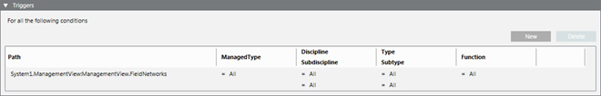

Trigger Conditions
When you configure a display rule for an external web application, the Triggers expander lets you set the combination of conditions that will trigger the display rule.

- Each condition occupies one row.
- You add a new condition (row), by clicking Add. This creates a new row with the fields set to All.
- You drag (link) one or more nodes from System Browser onto the Path field. This creates a new row with the Path field automatically set based on the linked objects.
- To remove a row, select it and click Delete.
- Within each row, you can define what criteria an external web application must match to make that condition true.
- All the criteria you specify on a row must be met for that condition to be true (AND logic between columns). These criteria are described in detail below.
Path. This field specifies the target objects affected by the external web application. The row will be true for external web applications affecting the specified target objects that also match any other criteria specified in the row.
- To set or change the Path field of a row, drag (link) one or more nodes from System Browser. If the Path field is already populated, a popup menu displays where you can select one of the following:
- Add new elements: The linked objects are added to the Path field. Any new objects will be appended to the existing ones.
- Add new elements and subtrees: The linked objects and their subtrees are added to the Path field. Any new object subtrees will be appended to the existing ones.
- Replace Existing Filter: The linked objects will replace the existing ones in the Path field.
- Add New Filter: Creates a new row with the linked objects added to the Path field of the new row, and all the other fields set to
All. - Cancel Operation: Operation is canceled.
- In the Path field you can also:
- Click the drop-down list to view all the linked objects.
- Click the x next to an object to remove it.
- Use the search box to filter the objects in the drop-down list. Note that the search box does not accept wildcards.
- Move your cursor over an object, and an asterisk (*) in the tooltip will indicate that the object includes subtrees.
Managed Type. This field defines the application that will display when the target object is selected in System Browser. You can filter by one of the available values that are inherited from the object model configuration.
Discipline/Subdiscipline, and Type/Subtype. You can use the equals (=) or not equals (≠) operators to filter by:
- The Discipline/Subdiscipline of the target object.
- The Type/Subtype of the target object.
The row will be true for external web applications affecting the specified target objects that also match any further criteria (managed type, discipline/subdiscipline, type/subtype, function) specified here.
Function. This field specifies any functions associated to the target objects. You can filter by one of the available values that are inherited from the object configuration.
The following reference table describes how function settings affect triggers:
Function setting in the Triggers expander | Function for the selected system object | Result |
All | No function. | The trigger is valid. |
All | For example, Area | The trigger is valid. |
For example, Area | No function. | The trigger is invalid. |
For example, Area | For example, Area | The trigger is valid. |
For example, Area | For example, Buzzer | The trigger is invalid. |